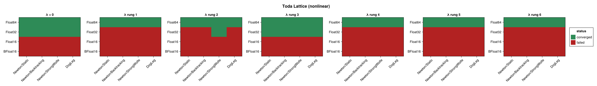
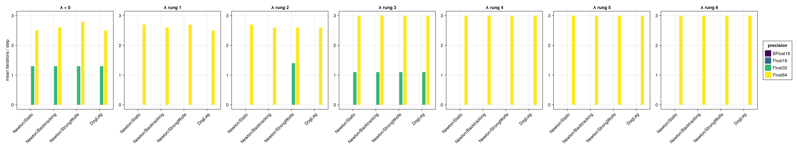
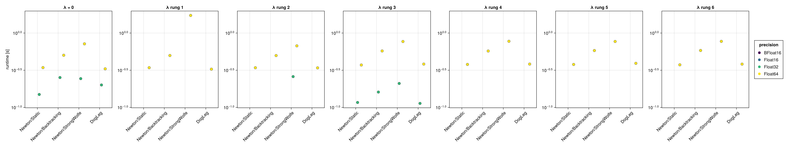
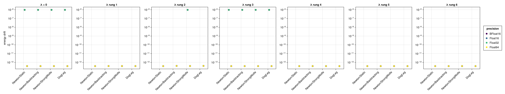
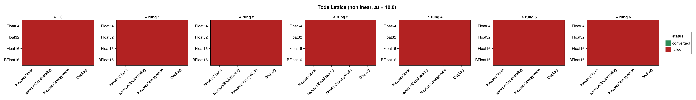

Toda Lattice (Nonlinear Integrator)
The Toda lattice (N = 16 sites) benchmarked with the ShallowNet integrator (see Harmonic Oscillator (Nonlinear Integrator) for the network setup and the regularization sweep). It is built as a 16-dimensional lodeproblem, so the network integrator solves a 16-dimensional implicit system at every step — the highest-dimensional problem in this study. Its Hamiltonian depends on both q and p; the energy drift is evaluated from the full state. No closed-form solution exists.
The figures panel by the regularization factor $\lambda$ — a rung of the $\sqrt{\varepsilon(T)}$ ladder, so one panel is a different shift at each precision; solver configurations are on the x-axis and precisions are distinguished by colour. Results are shown at $\Delta t = 0.1$ and repeated for $\Delta t = 1.0$ and $\Delta t = 10.0$ (ten steps each).
using SolverBenchmark
spec = toda_lattice_lode_spec(timespan = (0.0, 1.0), timestep = 0.1)
df = cached_sweep("nonlinear_toda_lattice_dt0.1") do
run_nonlinear_benchmark(spec; timing = :quick, max_iterations = 100,
verbose = false, quiet = true)
endConvergence
plot_convergence(df; panelcol = :regularization, title = "Toda Lattice (nonlinear)")
Nonlinear iterations
plot_iterations(df; panelcol = :regularization)
Run time
plot_runtime(df; panelcol = :regularization)
Energy drift
plot_energy_drift(df; panelcol = :regularization)
Discussion
- Despite its dimensionality the lattice is a clean case: at
Float64, all four solvers converge at $\lambda = 0$ and at all six rungs — 28 of 28. The 16-dimensional solve takes 2.6–3.0 iterations per step and conserves the energy to $3.75 \dots 3.84 \times 10^{-13}$, indistinguishable between $\lambda = 0$ and the rungs across a ladder spanning a factor of a thousand. Regularization is not needed here. - Run times are higher than the low-dimensional examples (16 coupled network fits per step), which is the main cost visible here.
Float32converges at rungs 1 and 6 only (8/28, all four solvers, at a residual of $3 \times 10^{-5}$), and the other 20 rows raise the OGA initial guess'sSingularException. That is the seed's marginality, not an optimum in $\lambda$: the exception is raised upstream of the Newton iteration, and $\lambda$ only perturbs the trajectory the next seed is built from — see Harmonic Oscillator (Nonlinear Integrator).Float16andBFloat16fail at every rung.
Results table
markdown_table(summary_table(df; panelcol = :regularization))| precision | solver_label | regularization | converged | iterations_mean | runtime_s | max_residual | at_tolerance | energy_drift |
|---|---|---|---|---|---|---|---|---|
| BFloat16 | Newton/Static | λ = 0 | ✗ | — | — | — | ✗ | — |
| BFloat16 | Newton/Static | λ rung 1 | ✗ | — | — | — | ✗ | — |
| BFloat16 | Newton/Static | λ rung 2 | ✗ | — | — | — | ✗ | — |
| BFloat16 | Newton/Static | λ rung 3 | ✗ | — | — | — | ✗ | — |
| BFloat16 | Newton/Static | λ rung 4 | ✗ | — | — | — | ✗ | — |
| BFloat16 | Newton/Static | λ rung 5 | ✗ | — | — | — | ✗ | — |
| BFloat16 | Newton/Static | λ rung 6 | ✗ | — | — | — | ✗ | — |
| BFloat16 | Newton/Backtracking | λ = 0 | ✗ | — | — | — | ✗ | — |
| BFloat16 | Newton/Backtracking | λ rung 1 | ✗ | — | — | — | ✗ | — |
| BFloat16 | Newton/Backtracking | λ rung 2 | ✗ | — | — | — | ✗ | — |
| BFloat16 | Newton/Backtracking | λ rung 3 | ✗ | — | — | — | ✗ | — |
| BFloat16 | Newton/Backtracking | λ rung 4 | ✗ | — | — | — | ✗ | — |
| BFloat16 | Newton/Backtracking | λ rung 5 | ✗ | — | — | — | ✗ | — |
| BFloat16 | Newton/Backtracking | λ rung 6 | ✗ | — | — | — | ✗ | — |
| BFloat16 | Newton/StrongWolfe | λ = 0 | ✗ | — | — | — | ✗ | — |
| BFloat16 | Newton/StrongWolfe | λ rung 1 | ✗ | — | — | — | ✗ | — |
| BFloat16 | Newton/StrongWolfe | λ rung 2 | ✗ | — | — | — | ✗ | — |
| BFloat16 | Newton/StrongWolfe | λ rung 3 | ✗ | — | — | — | ✗ | — |
| BFloat16 | Newton/StrongWolfe | λ rung 4 | ✗ | — | — | — | ✗ | — |
| BFloat16 | Newton/StrongWolfe | λ rung 5 | ✗ | — | — | — | ✗ | — |
| BFloat16 | Newton/StrongWolfe | λ rung 6 | ✗ | — | — | — | ✗ | — |
| BFloat16 | DogLeg | λ = 0 | ✗ | — | — | — | ✗ | — |
| BFloat16 | DogLeg | λ rung 1 | ✗ | — | — | — | ✗ | — |
| BFloat16 | DogLeg | λ rung 2 | ✗ | — | — | — | ✗ | — |
| BFloat16 | DogLeg | λ rung 3 | ✗ | — | — | — | ✗ | — |
| BFloat16 | DogLeg | λ rung 4 | ✗ | — | — | — | ✗ | — |
| BFloat16 | DogLeg | λ rung 5 | ✗ | — | — | — | ✗ | — |
| BFloat16 | DogLeg | λ rung 6 | ✗ | — | — | — | ✗ | — |
| Float16 | Newton/Static | λ = 0 | ✗ | — | — | — | ✗ | — |
| Float16 | Newton/Static | λ rung 1 | ✗ | — | — | — | ✗ | — |
| Float16 | Newton/Static | λ rung 2 | ✗ | — | — | — | ✗ | — |
| Float16 | Newton/Static | λ rung 3 | ✗ | — | — | — | ✗ | — |
| Float16 | Newton/Static | λ rung 4 | ✗ | — | — | — | ✗ | — |
| Float16 | Newton/Static | λ rung 5 | ✗ | — | — | — | ✗ | — |
| Float16 | Newton/Static | λ rung 6 | ✗ | — | — | — | ✗ | — |
| Float16 | Newton/Backtracking | λ = 0 | ✗ | — | — | — | ✗ | — |
| Float16 | Newton/Backtracking | λ rung 1 | ✗ | — | — | — | ✗ | — |
| Float16 | Newton/Backtracking | λ rung 2 | ✗ | — | — | — | ✗ | — |
| Float16 | Newton/Backtracking | λ rung 3 | ✗ | — | — | — | ✗ | — |
| Float16 | Newton/Backtracking | λ rung 4 | ✗ | — | — | — | ✗ | — |
| Float16 | Newton/Backtracking | λ rung 5 | ✗ | — | — | — | ✗ | — |
| Float16 | Newton/Backtracking | λ rung 6 | ✗ | — | — | — | ✗ | — |
| Float16 | Newton/StrongWolfe | λ = 0 | ✗ | — | — | — | ✗ | — |
| Float16 | Newton/StrongWolfe | λ rung 1 | ✗ | — | — | — | ✗ | — |
| Float16 | Newton/StrongWolfe | λ rung 2 | ✗ | — | — | — | ✗ | — |
| Float16 | Newton/StrongWolfe | λ rung 3 | ✗ | — | — | — | ✗ | — |
| Float16 | Newton/StrongWolfe | λ rung 4 | ✗ | — | — | — | ✗ | — |
| Float16 | Newton/StrongWolfe | λ rung 5 | ✗ | — | — | — | ✗ | — |
| Float16 | Newton/StrongWolfe | λ rung 6 | ✗ | — | — | — | ✗ | — |
| Float16 | DogLeg | λ = 0 | ✗ | — | — | — | ✗ | — |
| Float16 | DogLeg | λ rung 1 | ✗ | — | — | — | ✗ | — |
| Float16 | DogLeg | λ rung 2 | ✗ | — | — | — | ✗ | — |
| Float16 | DogLeg | λ rung 3 | ✗ | — | — | — | ✗ | — |
| Float16 | DogLeg | λ rung 4 | ✗ | — | — | — | ✗ | — |
| Float16 | DogLeg | λ rung 5 | ✗ | — | — | — | ✗ | — |
| Float16 | DogLeg | λ rung 6 | ✗ | — | — | — | ✗ | — |
| Float32 | Newton/Static | λ = 0 | ✓ | 1.3 | 0.149 | 3.02e-05 | ✓ | 9.54e-07 |
| Float32 | Newton/Static | λ rung 1 | ✗ | — | — | — | ✗ | — |
| Float32 | Newton/Static | λ rung 2 | ✗ | 1.4 | 0.138 | 4.16e-05 | ✗ | — |
| Float32 | Newton/Static | λ rung 3 | ✓ | 1.1 | 0.117 | 3.03e-05 | ✓ | 9.54e-07 |
| Float32 | Newton/Static | λ rung 4 | ✗ | — | — | — | ✗ | — |
| Float32 | Newton/Static | λ rung 5 | ✗ | — | — | — | ✗ | — |
| Float32 | Newton/Static | λ rung 6 | ✗ | 1.3 | 0.13 | 4.49e-05 | ✗ | — |
| Float32 | Newton/Backtracking | λ = 0 | ✓ | 1.3 | 0.252 | 3.02e-05 | ✓ | 9.54e-07 |
| Float32 | Newton/Backtracking | λ rung 1 | ✗ | — | — | — | ✗ | — |
| Float32 | Newton/Backtracking | λ rung 2 | ✗ | 1.4 | 0.2 | 3.64e-05 | ✗ | — |
| Float32 | Newton/Backtracking | λ rung 3 | ✓ | 1.1 | 0.161 | 3.03e-05 | ✓ | 9.54e-07 |
| Float32 | Newton/Backtracking | λ rung 4 | ✗ | — | — | — | ✗ | — |
| Float32 | Newton/Backtracking | λ rung 5 | ✗ | — | — | — | ✗ | — |
| Float32 | Newton/Backtracking | λ rung 6 | ✗ | 1.7 | 0.238 | 3.44e-05 | ✗ | — |
| Float32 | Newton/StrongWolfe | λ = 0 | ✓ | 1.3 | 0.244 | 3.02e-05 | ✓ | 9.54e-07 |
| Float32 | Newton/StrongWolfe | λ rung 1 | ✗ | — | — | — | ✗ | — |
| Float32 | Newton/StrongWolfe | λ rung 2 | ✓ | 1.4 | 0.26 | 2.99e-05 | ✓ | 9.54e-07 |
| Float32 | Newton/StrongWolfe | λ rung 3 | ✓ | 1.1 | 0.21 | 3.03e-05 | ✓ | 9.54e-07 |
| Float32 | Newton/StrongWolfe | λ rung 4 | ✗ | — | — | — | ✗ | — |
| Float32 | Newton/StrongWolfe | λ rung 5 | ✗ | — | — | — | ✗ | — |
| Float32 | Newton/StrongWolfe | λ rung 6 | ✗ | 1.5 | 0.283 | 3.87e-05 | ✗ | — |
| Float32 | DogLeg | λ = 0 | ✓ | 1.3 | 0.2 | 3.02e-05 | ✓ | 9.54e-07 |
| Float32 | DogLeg | λ rung 1 | ✗ | — | — | — | ✗ | — |
| Float32 | DogLeg | λ rung 2 | ✗ | 1.4 | 0.14 | 4.16e-05 | ✗ | — |
| Float32 | DogLeg | λ rung 3 | ✓ | 1.1 | 0.113 | 3.03e-05 | ✓ | 9.54e-07 |
| Float32 | DogLeg | λ rung 4 | ✗ | — | — | — | ✗ | — |
| Float32 | DogLeg | λ rung 5 | ✗ | — | — | — | ✗ | — |
| Float32 | DogLeg | λ rung 6 | ✗ | 1.3 | 0.13 | 4.49e-05 | ✗ | — |
| Float64 | Newton/Static | λ = 0 | ✓ | 2.5 | 0.343 | 1.15e-13 | ✓ | 3.77e-13 |
| Float64 | Newton/Static | λ rung 1 | ✓ | 2.7 | 0.342 | 1.59e-13 | ✓ | 3.75e-13 |
| Float64 | Newton/Static | λ rung 2 | ✓ | 2.7 | 0.341 | 1.13e-13 | ✓ | 3.75e-13 |
| Float64 | Newton/Static | λ rung 3 | ✓ | 3 | 0.372 | 9.24e-14 | ✓ | 3.75e-13 |
| Float64 | Newton/Static | λ rung 4 | ✓ | 3 | 0.378 | 1.03e-13 | ✓ | 3.75e-13 |
| Float64 | Newton/Static | λ rung 5 | ✓ | 3 | 0.378 | 8.79e-14 | ✓ | 3.75e-13 |
| Float64 | Newton/Static | λ rung 6 | ✓ | 3 | 0.374 | 6.62e-14 | ✓ | 3.75e-13 |
| Float64 | Newton/Backtracking | λ = 0 | ✓ | 2.6 | 0.503 | 8.7e-14 | ✓ | 3.75e-13 |
| Float64 | Newton/Backtracking | λ rung 1 | ✓ | 2.6 | 0.499 | 1.59e-13 | ✓ | 3.82e-13 |
| Float64 | Newton/Backtracking | λ rung 2 | ✓ | 2.6 | 0.498 | 1.21e-13 | ✓ | 3.96e-13 |
| Float64 | Newton/Backtracking | λ rung 3 | ✓ | 3 | 0.574 | 9.24e-14 | ✓ | 3.75e-13 |
| Float64 | Newton/Backtracking | λ rung 4 | ✓ | 3 | 0.573 | 1.03e-13 | ✓ | 3.75e-13 |
| Float64 | Newton/Backtracking | λ rung 5 | ✓ | 3 | 0.581 | 8.79e-14 | ✓ | 3.75e-13 |
| Float64 | Newton/Backtracking | λ rung 6 | ✓ | 3 | 0.583 | 6.62e-14 | ✓ | 3.75e-13 |
| Float64 | Newton/StrongWolfe | λ = 0 | ✓ | 2.8 | 0.715 | 6.59e-14 | ✓ | 3.75e-13 |
| Float64 | Newton/StrongWolfe | λ rung 1 | ✓ | 2.7 | 1.73 | 1.59e-13 | ✓ | 3.78e-13 |
| Float64 | Newton/StrongWolfe | λ rung 2 | ✓ | 2.6 | 0.672 | 9.52e-14 | ✓ | 3.85e-13 |
| Float64 | Newton/StrongWolfe | λ rung 3 | ✓ | 3 | 0.769 | 9.24e-14 | ✓ | 3.75e-13 |
| Float64 | Newton/StrongWolfe | λ rung 4 | ✓ | 3 | 0.775 | 1.03e-13 | ✓ | 3.75e-13 |
| Float64 | Newton/StrongWolfe | λ rung 5 | ✓ | 3 | 0.77 | 8.79e-14 | ✓ | 3.75e-13 |
| Float64 | Newton/StrongWolfe | λ rung 6 | ✓ | 3 | 0.773 | 6.62e-14 | ✓ | 3.75e-13 |
| Float64 | DogLeg | λ = 0 | ✓ | 2.5 | 0.33 | 1.59e-13 | ✓ | 3.75e-13 |
| Float64 | DogLeg | λ rung 1 | ✓ | 2.5 | 0.327 | 1.59e-13 | ✓ | 3.78e-13 |
| Float64 | DogLeg | λ rung 2 | ✓ | 2.6 | 0.34 | 1.05e-13 | ✓ | 3.96e-13 |
| Float64 | DogLeg | λ rung 3 | ✓ | 3 | 0.382 | 9.24e-14 | ✓ | 3.75e-13 |
| Float64 | DogLeg | λ rung 4 | ✓ | 3 | 0.383 | 1.03e-13 | ✓ | 3.75e-13 |
| Float64 | DogLeg | λ rung 5 | ✓ | 3 | 0.392 | 8.79e-14 | ✓ | 3.75e-13 |
| Float64 | DogLeg | λ rung 6 | ✓ | 3 | 0.382 | 6.62e-14 | ✓ | 3.75e-13 |
Coarse time step (Δt = 1.0)
spec1 = toda_lattice_lode_spec(timespan = (0.0, 10.0), timestep = 1.0)
df1 = cached_sweep("nonlinear_toda_lattice_dt1.0") do
run_nonlinear_benchmark(spec1; timing = :quick, max_iterations = 100,
verbose = false, quiet = true)
endplot_convergence(df1; panelcol = :regularization, title = "Toda Lattice (nonlinear, Δt = 1.0)")markdown_table(summary_table(df1; panelcol = :regularization))| precision | solver_label | regularization | converged | iterations_mean | runtime_s | max_residual |
|---|---|---|---|---|---|---|
| BFloat16 | Newton/Static | λ = 0 | ✗ | — | — | — |
| BFloat16 | Newton/Static | λ rung 1 | ✗ | — | — | — |
| BFloat16 | Newton/Static | λ rung 2 | ✗ | — | — | — |
| BFloat16 | Newton/Static | λ rung 3 | ✗ | — | — | — |
| BFloat16 | Newton/Static | λ rung 4 | ✗ | — | — | — |
| BFloat16 | Newton/Static | λ rung 5 | ✗ | — | — | — |
| BFloat16 | Newton/Static | λ rung 6 | ✗ | — | — | — |
| BFloat16 | Newton/Backtracking | λ = 0 | ✗ | — | — | — |
| BFloat16 | Newton/Backtracking | λ rung 1 | ✗ | — | — | — |
| BFloat16 | Newton/Backtracking | λ rung 2 | ✗ | — | — | — |
| BFloat16 | Newton/Backtracking | λ rung 3 | ✗ | — | — | — |
| BFloat16 | Newton/Backtracking | λ rung 4 | ✗ | — | — | — |
| BFloat16 | Newton/Backtracking | λ rung 5 | ✗ | — | — | — |
| BFloat16 | Newton/Backtracking | λ rung 6 | ✗ | — | — | — |
| BFloat16 | Newton/StrongWolfe | λ = 0 | ✗ | — | — | — |
| BFloat16 | Newton/StrongWolfe | λ rung 1 | ✗ | — | — | — |
| BFloat16 | Newton/StrongWolfe | λ rung 2 | ✗ | — | — | — |
| BFloat16 | Newton/StrongWolfe | λ rung 3 | ✗ | — | — | — |
| BFloat16 | Newton/StrongWolfe | λ rung 4 | ✗ | — | — | — |
| BFloat16 | Newton/StrongWolfe | λ rung 5 | ✗ | — | — | — |
| BFloat16 | Newton/StrongWolfe | λ rung 6 | ✗ | — | — | — |
| BFloat16 | DogLeg | λ = 0 | ✗ | — | — | — |
| BFloat16 | DogLeg | λ rung 1 | ✗ | — | — | — |
| BFloat16 | DogLeg | λ rung 2 | ✗ | — | — | — |
| BFloat16 | DogLeg | λ rung 3 | ✗ | — | — | — |
| BFloat16 | DogLeg | λ rung 4 | ✗ | — | — | — |
| BFloat16 | DogLeg | λ rung 5 | ✗ | — | — | — |
| BFloat16 | DogLeg | λ rung 6 | ✗ | — | — | — |
| Float16 | Newton/Static | λ = 0 | ✗ | — | — | — |
| Float16 | Newton/Static | λ rung 1 | ✗ | — | — | — |
| Float16 | Newton/Static | λ rung 2 | ✗ | — | — | — |
| Float16 | Newton/Static | λ rung 3 | ✗ | — | — | — |
| Float16 | Newton/Static | λ rung 4 | ✗ | — | — | — |
| Float16 | Newton/Static | λ rung 5 | ✗ | — | — | — |
| Float16 | Newton/Static | λ rung 6 | ✗ | — | — | — |
| Float16 | Newton/Backtracking | λ = 0 | ✗ | — | — | — |
| Float16 | Newton/Backtracking | λ rung 1 | ✗ | — | — | — |
| Float16 | Newton/Backtracking | λ rung 2 | ✗ | — | — | — |
| Float16 | Newton/Backtracking | λ rung 3 | ✗ | — | — | — |
| Float16 | Newton/Backtracking | λ rung 4 | ✗ | — | — | — |
| Float16 | Newton/Backtracking | λ rung 5 | ✗ | — | — | — |
| Float16 | Newton/Backtracking | λ rung 6 | ✗ | — | — | — |
| Float16 | Newton/StrongWolfe | λ = 0 | ✗ | — | — | — |
| Float16 | Newton/StrongWolfe | λ rung 1 | ✗ | — | — | — |
| Float16 | Newton/StrongWolfe | λ rung 2 | ✗ | — | — | — |
| Float16 | Newton/StrongWolfe | λ rung 3 | ✗ | — | — | — |
| Float16 | Newton/StrongWolfe | λ rung 4 | ✗ | — | — | — |
| Float16 | Newton/StrongWolfe | λ rung 5 | ✗ | — | — | — |
| Float16 | Newton/StrongWolfe | λ rung 6 | ✗ | — | — | — |
| Float16 | DogLeg | λ = 0 | ✗ | — | — | — |
| Float16 | DogLeg | λ rung 1 | ✗ | — | — | — |
| Float16 | DogLeg | λ rung 2 | ✗ | — | — | — |
| Float16 | DogLeg | λ rung 3 | ✗ | — | — | — |
| Float16 | DogLeg | λ rung 4 | ✗ | — | — | — |
| Float16 | DogLeg | λ rung 5 | ✗ | — | — | — |
| Float16 | DogLeg | λ rung 6 | ✗ | — | — | — |
| Float32 | Newton/Static | λ = 0 | ✗ | — | — | — |
| Float32 | Newton/Static | λ rung 1 | ✗ | — | — | — |
| Float32 | Newton/Static | λ rung 2 | ✗ | — | — | — |
| Float32 | Newton/Static | λ rung 3 | ✗ | — | — | — |
| Float32 | Newton/Static | λ rung 4 | ✗ | — | — | — |
| Float32 | Newton/Static | λ rung 5 | ✗ | — | — | — |
| Float32 | Newton/Static | λ rung 6 | ✗ | — | — | — |
| Float32 | Newton/Backtracking | λ = 0 | ✗ | — | — | — |
| Float32 | Newton/Backtracking | λ rung 1 | ✗ | — | — | — |
| Float32 | Newton/Backtracking | λ rung 2 | ✗ | — | — | — |
| Float32 | Newton/Backtracking | λ rung 3 | ✗ | — | — | — |
| Float32 | Newton/Backtracking | λ rung 4 | ✗ | — | — | — |
| Float32 | Newton/Backtracking | λ rung 5 | ✗ | — | — | — |
| Float32 | Newton/Backtracking | λ rung 6 | ✗ | — | — | — |
| Float32 | Newton/StrongWolfe | λ = 0 | ✗ | — | — | — |
| Float32 | Newton/StrongWolfe | λ rung 1 | ✗ | — | — | — |
| Float32 | Newton/StrongWolfe | λ rung 2 | ✗ | — | — | — |
| Float32 | Newton/StrongWolfe | λ rung 3 | ✗ | — | — | — |
| Float32 | Newton/StrongWolfe | λ rung 4 | ✗ | — | — | — |
| Float32 | Newton/StrongWolfe | λ rung 5 | ✗ | — | — | — |
| Float32 | Newton/StrongWolfe | λ rung 6 | ✗ | — | — | — |
| Float32 | DogLeg | λ = 0 | ✗ | — | — | — |
| Float32 | DogLeg | λ rung 1 | ✗ | — | — | — |
| Float32 | DogLeg | λ rung 2 | ✗ | — | — | — |
| Float32 | DogLeg | λ rung 3 | ✗ | — | — | — |
| Float32 | DogLeg | λ rung 4 | ✗ | — | — | — |
| Float32 | DogLeg | λ rung 5 | ✗ | — | — | — |
| Float32 | DogLeg | λ rung 6 | ✗ | — | — | — |
| Float64 | Newton/Static | λ = 0 | ✗ | 8.3 | 0.904 | 7.39e-07 |
| Float64 | Newton/Static | λ rung 1 | ✗ | 8.7 | 0.929 | 7.39e-07 |
| Float64 | Newton/Static | λ rung 2 | ✗ | 8.5 | 0.908 | 7.39e-07 |
| Float64 | Newton/Static | λ rung 3 | ✗ | 9.1 | 0.965 | 7.39e-07 |
| Float64 | Newton/Static | λ rung 4 | ✗ | 8.4 | 0.897 | 7.39e-07 |
| Float64 | Newton/Static | λ rung 5 | ✗ | 8.7 | 0.927 | 7.39e-07 |
| Float64 | Newton/Static | λ rung 6 | ✗ | 10 | 1.06 | 7.4e-07 |
| Float64 | Newton/Backtracking | λ = 0 | ✗ | 3.7 | 0.613 | 7.39e-07 |
| Float64 | Newton/Backtracking | λ rung 1 | ✗ | 3.9 | 0.644 | 7.39e-07 |
| Float64 | Newton/Backtracking | λ rung 2 | ✗ | 3.9 | 0.647 | 7.39e-07 |
| Float64 | Newton/Backtracking | λ rung 3 | ✗ | 3.5 | 0.581 | 7.39e-07 |
| Float64 | Newton/Backtracking | λ rung 4 | ✗ | 3.5 | 0.58 | 7.39e-07 |
| Float64 | Newton/Backtracking | λ rung 5 | ✗ | 3.9 | 0.644 | 7.39e-07 |
| Float64 | Newton/Backtracking | λ rung 6 | ✗ | 4.5 | 0.743 | 7.4e-07 |
| Float64 | Newton/StrongWolfe | λ = 0 | ✗ | 3.7 | 0.828 | 7.39e-07 |
| Float64 | Newton/StrongWolfe | λ rung 1 | ✗ | 3.7 | 0.822 | 7.39e-07 |
| Float64 | Newton/StrongWolfe | λ rung 2 | ✗ | 3.5 | 0.79 | 7.39e-07 |
| Float64 | Newton/StrongWolfe | λ rung 3 | ✗ | 3.4 | 0.78 | 7.39e-07 |
| Float64 | Newton/StrongWolfe | λ rung 4 | ✗ | 3.5 | 0.772 | 7.39e-07 |
| Float64 | Newton/StrongWolfe | λ rung 5 | ✗ | 3.9 | 0.847 | 7.39e-07 |
| Float64 | Newton/StrongWolfe | λ rung 6 | ✗ | 4.6 | 1 | 7.4e-07 |
| Float64 | DogLeg | λ = 0 | ✗ | 3.6 | 0.406 | 7.39e-07 |
| Float64 | DogLeg | λ rung 1 | ✗ | 3.6 | 0.408 | 7.39e-07 |
| Float64 | DogLeg | λ rung 2 | ✗ | 3.6 | 0.402 | 7.39e-07 |
| Float64 | DogLeg | λ rung 3 | ✗ | 3.6 | 0.405 | 7.39e-07 |
| Float64 | DogLeg | λ rung 4 | ✗ | 3.5 | 0.393 | 7.39e-07 |
| Float64 | DogLeg | λ rung 5 | ✗ | 4.1 | 0.452 | 7.39e-07 |
| Float64 | DogLeg | λ rung 6 | ✗ | 4.7 | 0.52 | 7.4e-07 |
Large time step (Δt = 10.0)
spec10 = toda_lattice_lode_spec(timespan = (0.0, 100.0), timestep = 10.0)
df10 = cached_sweep("nonlinear_toda_lattice_dt10.0") do
run_nonlinear_benchmark(spec10; timing = :quick, max_iterations = 100,
verbose = false, quiet = true)
endplot_convergence(df10; panelcol = :regularization, title = "Toda Lattice (nonlinear, Δt = 10.0)")
markdown_table(summary_table(df10; panelcol = :regularization))| precision | solver_label | regularization | converged | iterations_mean | runtime_s | max_residual |
|---|---|---|---|---|---|---|
| BFloat16 | Newton/Static | λ = 0 | ✗ | — | — | — |
| BFloat16 | Newton/Static | λ rung 1 | ✗ | — | — | — |
| BFloat16 | Newton/Static | λ rung 2 | ✗ | — | — | — |
| BFloat16 | Newton/Static | λ rung 3 | ✗ | — | — | — |
| BFloat16 | Newton/Static | λ rung 4 | ✗ | — | — | — |
| BFloat16 | Newton/Static | λ rung 5 | ✗ | — | — | — |
| BFloat16 | Newton/Static | λ rung 6 | ✗ | — | — | — |
| BFloat16 | Newton/Backtracking | λ = 0 | ✗ | — | — | — |
| BFloat16 | Newton/Backtracking | λ rung 1 | ✗ | — | — | — |
| BFloat16 | Newton/Backtracking | λ rung 2 | ✗ | — | — | — |
| BFloat16 | Newton/Backtracking | λ rung 3 | ✗ | — | — | — |
| BFloat16 | Newton/Backtracking | λ rung 4 | ✗ | — | — | — |
| BFloat16 | Newton/Backtracking | λ rung 5 | ✗ | — | — | — |
| BFloat16 | Newton/Backtracking | λ rung 6 | ✗ | — | — | — |
| BFloat16 | Newton/StrongWolfe | λ = 0 | ✗ | — | — | — |
| BFloat16 | Newton/StrongWolfe | λ rung 1 | ✗ | — | — | — |
| BFloat16 | Newton/StrongWolfe | λ rung 2 | ✗ | — | — | — |
| BFloat16 | Newton/StrongWolfe | λ rung 3 | ✗ | — | — | — |
| BFloat16 | Newton/StrongWolfe | λ rung 4 | ✗ | — | — | — |
| BFloat16 | Newton/StrongWolfe | λ rung 5 | ✗ | — | — | — |
| BFloat16 | Newton/StrongWolfe | λ rung 6 | ✗ | — | — | — |
| BFloat16 | DogLeg | λ = 0 | ✗ | — | — | — |
| BFloat16 | DogLeg | λ rung 1 | ✗ | — | — | — |
| BFloat16 | DogLeg | λ rung 2 | ✗ | — | — | — |
| BFloat16 | DogLeg | λ rung 3 | ✗ | — | — | — |
| BFloat16 | DogLeg | λ rung 4 | ✗ | — | — | — |
| BFloat16 | DogLeg | λ rung 5 | ✗ | — | — | — |
| BFloat16 | DogLeg | λ rung 6 | ✗ | — | — | — |
| Float16 | Newton/Static | λ = 0 | ✗ | — | — | — |
| Float16 | Newton/Static | λ rung 1 | ✗ | — | — | — |
| Float16 | Newton/Static | λ rung 2 | ✗ | — | — | — |
| Float16 | Newton/Static | λ rung 3 | ✗ | — | — | — |
| Float16 | Newton/Static | λ rung 4 | ✗ | — | — | — |
| Float16 | Newton/Static | λ rung 5 | ✗ | — | — | — |
| Float16 | Newton/Static | λ rung 6 | ✗ | — | — | — |
| Float16 | Newton/Backtracking | λ = 0 | ✗ | — | — | — |
| Float16 | Newton/Backtracking | λ rung 1 | ✗ | — | — | — |
| Float16 | Newton/Backtracking | λ rung 2 | ✗ | — | — | — |
| Float16 | Newton/Backtracking | λ rung 3 | ✗ | — | — | — |
| Float16 | Newton/Backtracking | λ rung 4 | ✗ | — | — | — |
| Float16 | Newton/Backtracking | λ rung 5 | ✗ | — | — | — |
| Float16 | Newton/Backtracking | λ rung 6 | ✗ | — | — | — |
| Float16 | Newton/StrongWolfe | λ = 0 | ✗ | — | — | — |
| Float16 | Newton/StrongWolfe | λ rung 1 | ✗ | — | — | — |
| Float16 | Newton/StrongWolfe | λ rung 2 | ✗ | — | — | — |
| Float16 | Newton/StrongWolfe | λ rung 3 | ✗ | — | — | — |
| Float16 | Newton/StrongWolfe | λ rung 4 | ✗ | — | — | — |
| Float16 | Newton/StrongWolfe | λ rung 5 | ✗ | — | — | — |
| Float16 | Newton/StrongWolfe | λ rung 6 | ✗ | — | — | — |
| Float16 | DogLeg | λ = 0 | ✗ | — | — | — |
| Float16 | DogLeg | λ rung 1 | ✗ | — | — | — |
| Float16 | DogLeg | λ rung 2 | ✗ | — | — | — |
| Float16 | DogLeg | λ rung 3 | ✗ | — | — | — |
| Float16 | DogLeg | λ rung 4 | ✗ | — | — | — |
| Float16 | DogLeg | λ rung 5 | ✗ | — | — | — |
| Float16 | DogLeg | λ rung 6 | ✗ | — | — | — |
| Float32 | Newton/Static | λ = 0 | ✗ | — | — | — |
| Float32 | Newton/Static | λ rung 1 | ✗ | 7.5 | 0.82 | 218 |
| Float32 | Newton/Static | λ rung 2 | ✗ | 9.6 | 0.835 | 82.1 |
| Float32 | Newton/Static | λ rung 3 | ✗ | — | — | — |
| Float32 | Newton/Static | λ rung 4 | ✗ | 9.8 | 0.922 | 85.7 |
| Float32 | Newton/Static | λ rung 5 | ✗ | 9.7 | 0.767 | 88.5 |
| Float32 | Newton/Static | λ rung 6 | ✗ | 10 | 0.819 | 88.9 |
| Float32 | Newton/Backtracking | λ = 0 | ✗ | 7.2 | 1.01 | 112 |
| Float32 | Newton/Backtracking | λ rung 1 | ✗ | 8.2 | 0.885 | 93.9 |
| Float32 | Newton/Backtracking | λ rung 2 | ✗ | 7 | 0.949 | 99.3 |
| Float32 | Newton/Backtracking | λ rung 3 | ✗ | 7.5 | 1.01 | 94.8 |
| Float32 | Newton/Backtracking | λ rung 4 | ✗ | — | — | — |
| Float32 | Newton/Backtracking | λ rung 5 | ✗ | — | — | — |
| Float32 | Newton/Backtracking | λ rung 6 | ✗ | — | — | — |
| Float32 | Newton/StrongWolfe | λ = 0 | ✗ | 6.3 | 1.06 | 109 |
| Float32 | Newton/StrongWolfe | λ rung 1 | ✗ | 5.6 | 0.953 | 170 |
| Float32 | Newton/StrongWolfe | λ rung 2 | ✗ | 11.2 | 1.89 | 107 |
| Float32 | Newton/StrongWolfe | λ rung 3 | ✗ | 6.3 | 1.17 | 117 |
| Float32 | Newton/StrongWolfe | λ rung 4 | ✗ | 6.6 | 1.13 | 108 |
| Float32 | Newton/StrongWolfe | λ rung 5 | ✗ | 6.6 | 1.11 | 113 |
| Float32 | Newton/StrongWolfe | λ rung 6 | ✗ | 6.7 | 1.22 | 105 |
| Float32 | DogLeg | λ = 0 | ✗ | — | — | — |
| Float32 | DogLeg | λ rung 1 | ✗ | 6.4 | 0.659 | 112 |
| Float32 | DogLeg | λ rung 2 | ✗ | 6.3 | 0.562 | 167 |
| Float32 | DogLeg | λ rung 3 | ✗ | — | — | — |
| Float32 | DogLeg | λ rung 4 | ✗ | 6 | 1.39 | 170 |
| Float32 | DogLeg | λ rung 5 | ✗ | 6.4 | 0.808 | 113 |
| Float32 | DogLeg | λ rung 6 | ✗ | 7.3 | 0.578 | 112 |
| Float64 | Newton/Static | λ = 0 | ✗ | — | — | — |
| Float64 | Newton/Static | λ rung 1 | ✗ | — | — | — |
| Float64 | Newton/Static | λ rung 2 | ✗ | — | — | — |
| Float64 | Newton/Static | λ rung 3 | ✗ | — | — | — |
| Float64 | Newton/Static | λ rung 4 | ✗ | — | — | — |
| Float64 | Newton/Static | λ rung 5 | ✗ | — | — | — |
| Float64 | Newton/Static | λ rung 6 | ✗ | — | — | — |
| Float64 | Newton/Backtracking | λ = 0 | ✗ | — | — | — |
| Float64 | Newton/Backtracking | λ rung 1 | ✗ | 64.8 | 14.9 | 182 |
| Float64 | Newton/Backtracking | λ rung 2 | ✗ | 73.6 | 16.8 | 491 |
| Float64 | Newton/Backtracking | λ rung 3 | ✗ | 73 | 16.5 | 1.68e+03 |
| Float64 | Newton/Backtracking | λ rung 4 | ✗ | 80.1 | 17.2 | 1.29e+03 |
| Float64 | Newton/Backtracking | λ rung 5 | ✗ | 65 | 14.8 | 23.8 |
| Float64 | Newton/Backtracking | λ rung 6 | ✗ | 75 | 15.5 | 458 |
| Float64 | Newton/StrongWolfe | λ = 0 | ✗ | — | — | — |
| Float64 | Newton/StrongWolfe | λ rung 1 | ✗ | 77.9 | 26.3 | 162 |
| Float64 | Newton/StrongWolfe | λ rung 2 | ✗ | 67.3 | 23.1 | 185 |
| Float64 | Newton/StrongWolfe | λ rung 3 | ✗ | 71.1 | 23.1 | 1.03e+03 |
| Float64 | Newton/StrongWolfe | λ rung 4 | ✗ | 69.8 | 23 | 18.8 |
| Float64 | Newton/StrongWolfe | λ rung 5 | ✗ | 70.7 | 25.2 | 20.2 |
| Float64 | Newton/StrongWolfe | λ rung 6 | ✗ | 75.9 | 24.6 | 150 |
| Float64 | DogLeg | λ = 0 | ✗ | — | — | — |
| Float64 | DogLeg | λ rung 1 | ✗ | 78.3 | 11.7 | 181 |
| Float64 | DogLeg | λ rung 2 | ✗ | 81.8 | 12.4 | 93.9 |
| Float64 | DogLeg | λ rung 3 | ✗ | — | — | — |
| Float64 | DogLeg | λ rung 4 | ✗ | — | — | — |
| Float64 | DogLeg | λ rung 5 | ✗ | 88.5 | 11.7 | 326 |
| Float64 | DogLeg | λ rung 6 | ✗ | 83.5 | 12.3 | 116 |